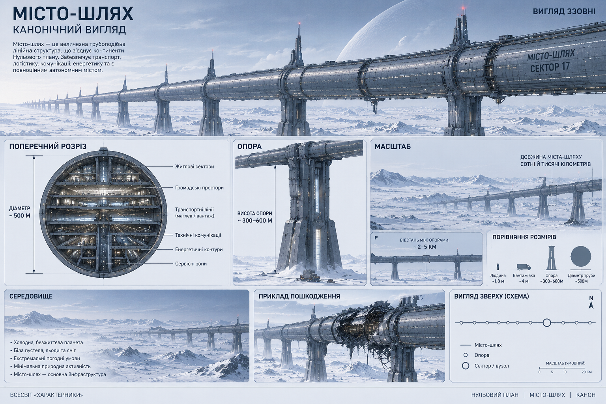

Transport
Central transport routes and monorail systems move people and cargo between distant sectors.
TECHNOLOGY 05 · CIVIL INFRASTRUCTURE
A vast linear infrastructure connecting residential, transport, manufacturing, energy and defensive systems into a single autonomous network.

CONCEPT
The City-Path is not an ordinary city, but a huge, continuous infrastructure system. In a world shaped by global catastrophe, structures like these became one of the main ways to preserve human life and civilisation.
It can extend across vast territories, cross continents and oceans, and connect distant human settlements. The books describe City-Paths hundreds or even thousands of kilometres long.
CONSTRUCTION
The City-Path is built around a massive tubular structure raised above the surface on large supports. In cross-section, it resembles an oval tube. Different functional levels and sectors are located inside it.
Central transport routes and monorail systems move people and cargo between distant sectors.
Residential districts inside the structure allow people to live continuously regardless of conditions on the surface.
Production facilities keep the city running and allow damaged infrastructure to be repaired.
Power stations and internal networks supply residential, technical and manufacturing systems.
INTERNAL INFRASTRUCTURE
The City-Path is designed so that many essential functions can operate inside the structure itself. Housing, transport, production, energy and protection form one interconnected system, reducing dependence on the hostile environment outside.
CANONICAL DESIGN
The canonical design is a huge tube-like city raised high above the surface on massive supports. The planet around it is cold and devastated; the City-Path functions as a self-contained urban and transport system.